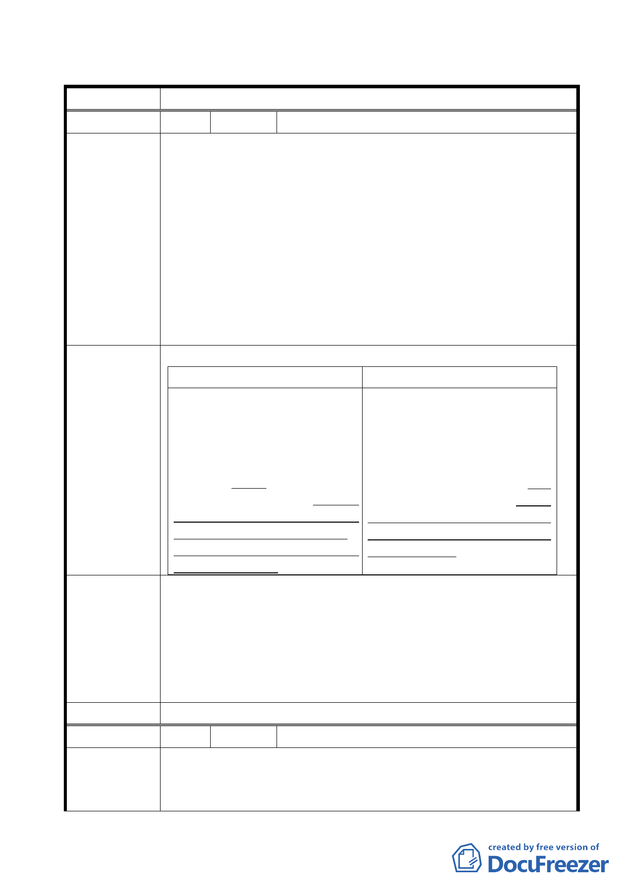

臺北市都市計畫委員會 公民或團體所提意見綜理表
案名
擬定臺北市文山區木柵路一段中興山莊附近地區細部計畫案
編號
陳情理由
建議辦法
發展局回應
委員會決議
1 陳情人 元利建設股份有限公司
1.本案計畫書第 17 頁回饋計畫第（四）點敘及「南側第三種住
宅區開發時，所有權人(元利建設股份有限公司)應提供 1,650
平方公尺(約 500 坪)樓地板之公益性設施並捐贈予臺北市。
本案捐贈之公益性設施，未來由需求機關負責維護管理。」
內容，並無異議，先予敘明。
2.惟關於上述公益性設施之區位，考量歷史性建築物與公益性設
施之活動相容性與地區機能配置之彈性，建議於細部計畫中
暫不指定位置。在顧及公益性設施使用之便利性及公共可及
性之前提下，授權予「臺北市都市設計及土地使用開發許可
審議委員會」審議。
修正文字內容如下：
原條文內容
建議修正條文內容
(四)南側第三種住宅區開發時，所有 (四)南側第三種住宅區開發時，所有
權人(元利建設股份有限公司)應提供 權人(元利建設股份有限公司)應提
1,650平方公尺(約500坪)樓地板之公 供 1,650 平方公尺(約 500 坪)樓地板
益性設施並捐贈予臺北市。本案捐贈 之公益性設施並捐贈予臺北市。本案
之公益性設施，未來由需求機關負責 捐贈之公益性設施，未來由需求機關
維護管理。另考量上開公益性設施使 負責維護管理。上開公益性設施考量
用之便利性及公共可及性，該設施留 使用之便利性及公共可及性，其設施
設位置以鄰近2500平方公尺之廣場式 留設位置，應經「臺北市都市設計
開放空間為原則，結合歷史性建築 及 土 地 使 用 開 發 許 可 審 議 委 員
物、公共開放空間，形塑為具歷史文 會」審議通過。
教意象之公共空間。
有關公益性設施留設之區位，前於本市都委會審議主要計畫時
即已討論確定，並以鄰近 2500 平方公尺之廣場式開放空間為
原則，惟考量未來住宅區開發時設計配置彈性及公益性設施公
共可及性等因素，擬於原條文後方加註：「其設施留設位置，
若經臺北市都市設計及土地使用開發許可審議委員會同意者
不在此限」，以維持彈性。
依市府（發展局）回應內容辦理。
編號
陳情理由
2 陳情人 林永鍾
北側基地規畫為國小用地，四周道路應優先闢建以維師生安全及
方便進出學校，原規劃案界址僅到八公尺計畫道路邊緣，未含八
公尺計畫道路，忽略鄰地居民權益，及登山民眾需求。
14